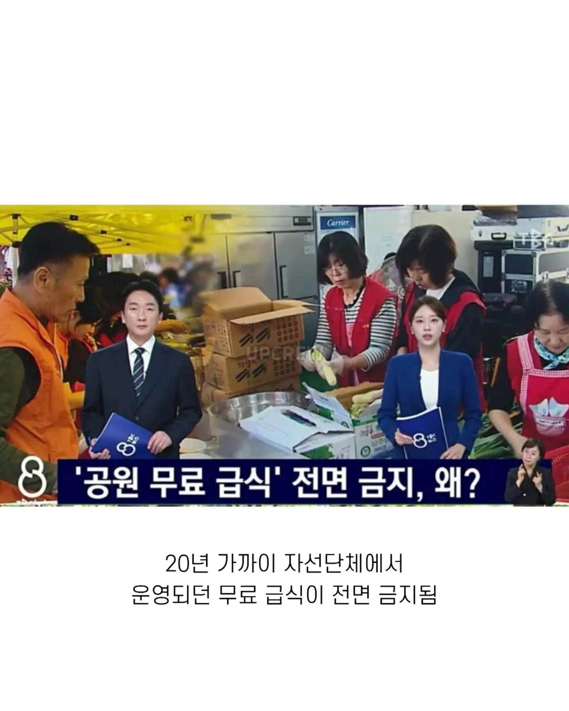
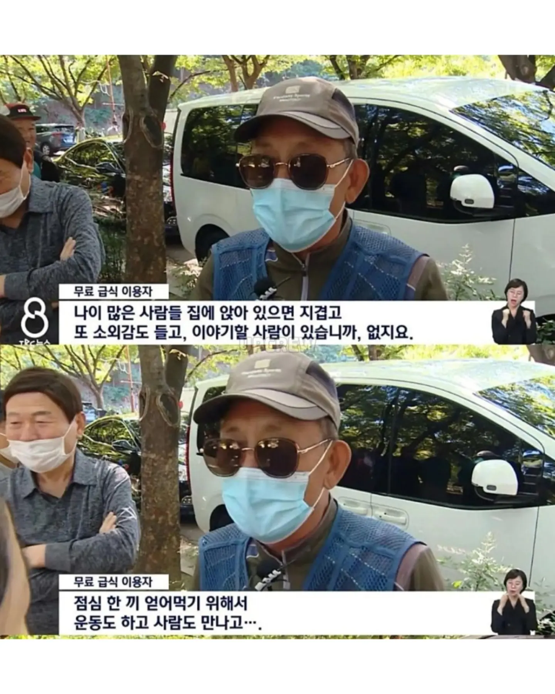
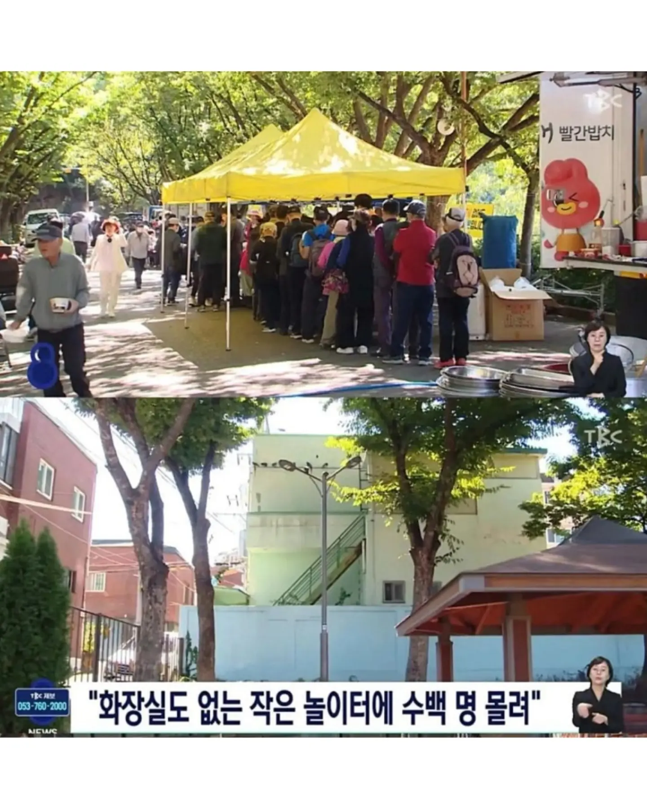
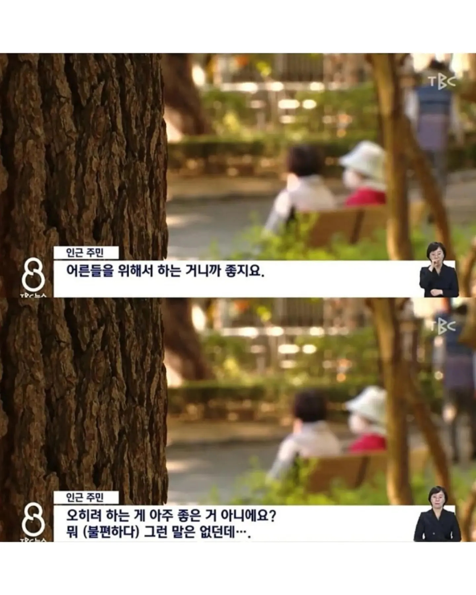
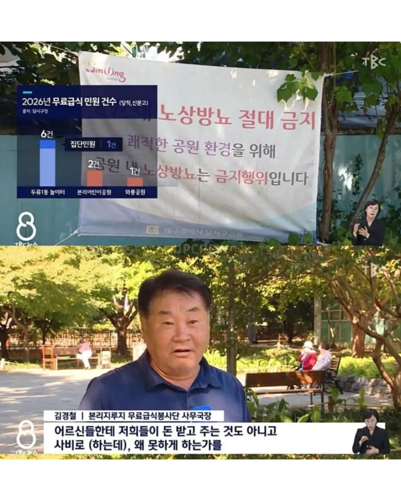
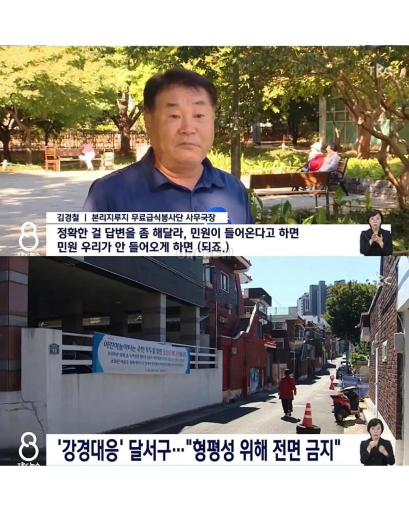
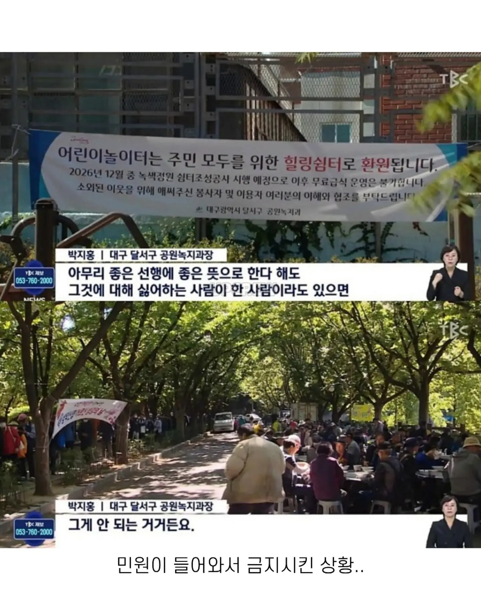

중간에 답이 있네
아무대서나 오줌 갈기고
시끄럽게 떠들고
동네에서 민원 나올수밖에 없지
비둘기 좆냥이 먹이주는거랑 똑같네 시발ㅋㅋㅋㅋㅋㅋㅋㅋ
아무데나 오줌 똥 갈기는 느낌이구만
ㄹㅇ 딱 이거네
자업자득이지
고양이도 오줌쌀땐 숨어서 싸는데
오줌 마렵다고 아무데나 싸면 그게 짐승이지 ㅋㅋ
하우불이 ㅋㅋ
미개하구만... 그런데 노인들은 소변을 못 참음. 그런데 공원에서 급식을 하는데 화장실도 없다? 그럼 뭐 싸던가 노상방뇨하던가 하는거지.
그걸 못참으면 성인용 기저귀 하던지
덜 먹던지 해야하는데
노상방뇨 하다 잡히고선
너희 부모는 안그런줄 아냐 이런 ㅈ같은 소리 함
화장실을 좀 만들지 ?,
자선단체가 그거까지해야하냐면 흠...
왜 그걸 자선단체한테 바래
그러니까 하는 말이지. 그렇다고 세금으로 만들 수도 없잖아.
오줌은 ㅅㅂ
사비가 아니고 후원금이나 보조금 이겠지, 사비는 무슨
노상방뇨 ㅅㅂ..
아무리 좋은 일이여도 한 사람이라도 싫어하면 안된다는 논리는 어디서 온거임 ㅋㅋㅋ
할아버지들 진심 아무대서나 오줌 잘 갈기더라 탑골 공원만 가도 뭐 중국 여행온줄 알았다
와룡공원과 본리어린이공원은 사정이 좀 다릅니다.
두류1동 놀이터보다는 규모가 큰 데다 주택가와도 비교적 멀리 떨어져 있습니다.
주민 반감도 적었습니다.
[인근 주민 : 어른들을 위해서 하는 거니까 좋지요.]
[인근 주민 : 오히려 하는 게 아주 좋은 거 아니에요?
뭐 불편하다 그런 말은 없던데.]
실제로 무료 급식으로 인한 민원도 한곳에 집중됐습니다.
두류1동 놀이터에는 올해 모두 6건의 민원이 접수됐는데,
이 중 1건은 주민 50여 명이 낸 집단 민원이었습니다.
하지만 와룡공원과 본리공원에 접수된 민원은 각각 1건과 2건에 불과했습니다.
봉사단체들은 한두 건의 민원 때문에 무료 급식을
전면 금지한다는 걸 이해할 수 없다는 반응입니다.
노인네들이 오줌누고 시끄럽다는 인터뷰는 두류1동의 입장인가보네
아주대 헬기 민원 생각나네.. 어디까지 불편을 감수할것인가에 대한 기준정립 매우 어렵지.
백원만 받고 주거나하지 않을까?
공용 화장실 옆에서 배식하면 해결!
아무데서나 오줌 갈구고 시끄럽게 하면 그게 좆냥이랑 뭐가 다르냐 ㅋㅋㅋ
짐승새끼냐
좋은일 하는건 맞는데 주민들 불편도 생각해줘야지